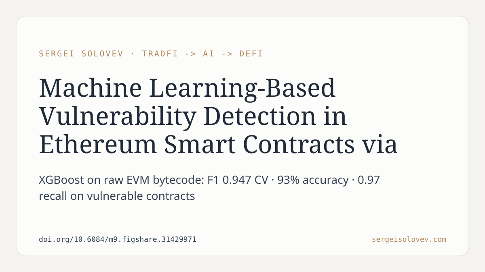

Most on-chain vulnerability scanners require Solidity source or ABI — unavailable for the majority of deployed contracts. The practical question: how much signal can you extract from raw EVM bytecode alone?
In this paper, I built a feature engineering pipeline that pulls 65 numerical features directly from disassembled bytecode — covering reentrancy patterns, arithmetic overflow indicators, gas-based denial-of-service risks, access control anomalies, and environmental dependencies — with no source code required. Trained on 117,091 labelled real-world Ethereum contracts and evaluated under stratified 5-fold cross-validation, XGBoost (tuned via Bayesian search with Optuna, 50 trials) reaches F1 0.947 on cross-validation and 93% accuracy on a held-out set. Recall for vulnerable contracts is 0.97. A separate benchmark shows hand-crafted numerical features substantially outperform n-gram opcode vectorisation.
The practical implication: symbolic execution and static analysis remain the precision ceiling, but they are computationally prohibitive at scale. A bytecode-only ML classifier can serve as a first-pass filter across millions of deployed contracts — flagging candidates for deeper analysis without requiring verified source. The 0.97 vulnerable-recall figure is the relevant threshold here; missing a vulnerable contract is more costly than a false positive.
Full paper and code: https://doi.org/10.6084/m9.figshare.31429971
#DeFi #SmartContracts #ML